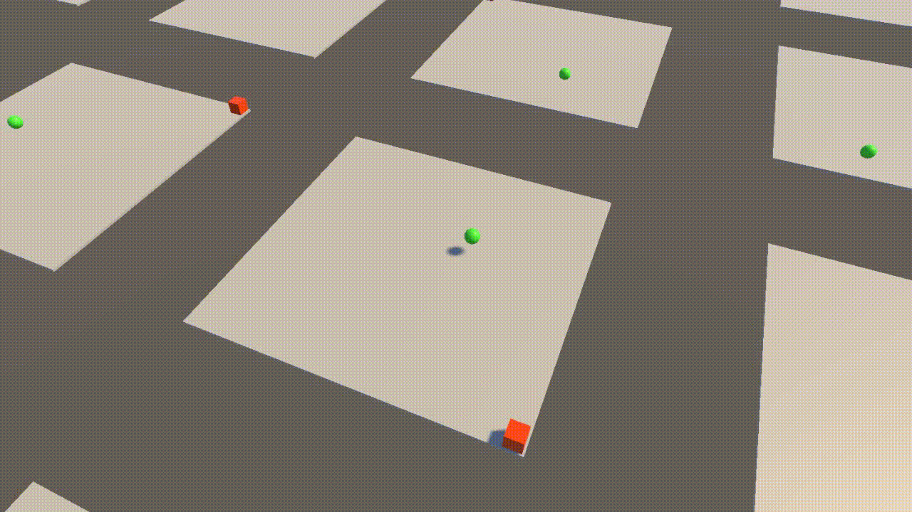
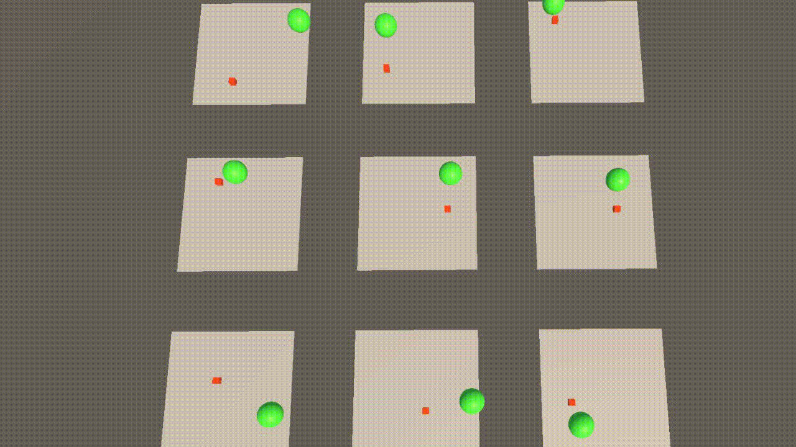

NeuronCrafter
Unity, C#

NeuronCrafter is my final thesis project, developed over the course of 10 weeks as a solo endeavor. It is a Unity framework designed to make it easy to add and experiment with neural networks directly in game projects.
About NeuronCrafter


NeuronCrafter is a Unity framework that lets developers easily add and experiment with neural networks in their projects. Built solo in 10 weeks, it includes the core logic for creating and training networks, providing a hands-on way to explore AI-driven behaviors. While it doesn’t yet include backpropagation, it offers a practical foundation for prototyping intelligent systems and learning how neural networks can enhance interactive experiences.
Features
- Build in example
- NeuralNetwrok class
- Trainer class
- ReadMe/Overview
- Final Thesis
- reusable SaveSystem
Responsibilities
I was fully responsible for managing the project, including planning my tasks, deciding feature priorities, and determining which features to cut.
I implemented all aspects of the framework myself and documented parts of the development process.
This required careful self-management, organization, and decision-making to ensure the project stayed on track and met its goals.
What I learned
Through NeuronCrafter, I gained a deeper understanding of how neural networks function and how to train them.
Part of my thesis involved applying neural networks to enemy behavior, which didn’t work as planned,
but it gave me valuable insight into when neural networks are appropriate and when other methods,
like state machines or behavior trees, are more effective.
I also improved my self-management and learned strategies to stay motivated and organized while working independently.
Scripts
The following scripts are excerpts from my project and may not include the full logic, as they are part of a larger set of scripts.
You can view and download the project here.
Neuron
▶
using System;
using System.Collections.Generic;
namespace NeuronCrafter.NeuralNetwork
{
[Serializable]
public class Neuron
{
public float[] weights;
public float bias;
public float alpha;
public MutatedNeuron[] mutatedNeurons;
public List weightsForNewConnections;
public Neuron(float[] _weights, float _bias, float _alpha, MutatedNeuron[] _mutatedNeurons)
{
weights = _weights;
bias = _bias;
alpha = _alpha;
mutatedNeurons = _mutatedNeurons;
}
public float GetValue(float[] _inputs, EActivationFunction _activationFunction)
{
float value = 0;
for (int i = 0; i < _inputs.Length; i++)
{
if (mutatedNeurons[i].IsActive)
{
value += (mutatedNeurons[i].GetValue(_inputs[i], _activationFunction) * weights[i]);
}
else
{
value += (_inputs[i] * weights[i]);
}
}
value += bias;
return ActivationFunctionHandler.Calculate(_activationFunction, value, alpha);
}
}
} Layer
▶
using System;
namespace NeuronCrafter.NeuralNetwork
{
[Serializable]
public class NeuralLayer
{
public Neuron[] Neurons;
private EActivationFunction activationFunction;
public NeuralLayer(Neuron[] _neurons, EActivationFunction _activationFunction)
{
Neurons = _neurons;
activationFunction = _activationFunction;
}
public float[] FeedForward(float[] _inputs)
{
float[] outputs = new float[Neurons.Length];
for (int i = 0; i < Neurons.Length; i++)
{
outputs[i] = Neurons[i].GetValue(_inputs, activationFunction);
}
return outputs;
}
}
}Neural Network
▶
using System;
using System.Collections.Generic;
using System.IO;
using UnityEngine;
using Random = UnityEngine.Random;
#if UNITY_EDITOR
#endif
namespace NeuronCrafter.NeuralNetwork
{
public class NeuralNetwork : MonoBehaviour
{
private const string typeTooltip = "All neural networks that have the same structure of layers and neurons should be the same type";
private const string uniqueNameTooltip = "This will be uses to create the save file and in the managerclass thats holds each neural network is saved in a dictonary";
public float FitnessValue { get; private set; }
[SerializeField, Header("Core"), Tooltip(typeTooltip)] private string type;
[SerializeField, Tooltip(uniqueNameTooltip)] private string uniqueName;
[SerializeField] private NeuralNetworkTrainer trainer;
[SerializeField, Header("Structure")] private int inputCount;
[SerializeField] private List layersConfig;
[SerializeField, Header("Initalize")] private EInitializeMethod initializeMethod;
[SerializeField, Header("values for generating new values")] private float weightsRange;
[SerializeField] private float biasRange;
[SerializeField] private float alphaRange;
public string Type { get { return type; } }
public string UniqueName { get { return uniqueName; } }
public int InputCount { get { return inputCount; } }
private List layers = new List();
private NeuralNetworkSaveData bestOwnSave;
private void Start()
{
Load();
if (Type == "")
{
Debug.LogError("Please Enter a type");
}
if (UniqueName == "")
{
Debug.LogError("Please Enter a Unique Name");
}
}
private void OnDestroy()
{
Save();
}
private void OnApplicationQuit()
{
Save();
}
public void Initialize(string _type, string _name)
{
type = _type;
uniqueName = _name;
}
public void Load()
{
NeuralNetworkSaveData saveData = null;
switch (initializeMethod)
{
case EInitializeMethod.UseBestSave:
string pathToBest = Application.streamingAssetsPath + "/" + "NeuralNetworkSaveFiles" + "/" + type + "/" + type + "Best" + ".nn_save";
saveData = SaveSystem.SaveSystem.Load(pathToBest);
break;
case EInitializeMethod.UseOwnSave:
string OwnPath = Application.streamingAssetsPath + "/" + "NeuralNetworkSaveFiles" + "/" + type + "/" + uniqueName + ".nn_save";
saveData = SaveSystem.SaveSystem.Load(OwnPath);
break;
}
Load(saveData, false);
}
public void SetBestSave(NeuralNetworkSaveData _bestOwnSave)
{
bestOwnSave = _bestOwnSave;
}
public NeuralNetworkSaveData GetBestSave()
{
return bestOwnSave;
}
public void Load(NeuralNetworkSaveData _saveData, bool _loadFitnees = true)
{
if (_saveData != null)
{
if (_saveData.Type == type)
{
if (inputCount == _saveData.InputCount && layersConfig.Count == _saveData.Layers.Count)
{
for (int i = 0; i < layersConfig.Count; i++)
{
if (_saveData.Layers[i].Neurons.Length != layersConfig[i].NeuronCount)
{
Debug.LogWarning("Loaded values can't be mapped to this neural network, because the structure is difference. Generating random values, it will 'forget' everything it has learned");
GenerateRandomValues();
return;
}
}
layers = _saveData.Layers;
if (_loadFitnees)
{
FitnessValue = _saveData.FitnessValue;
}
return;
}
}
}
Debug.LogWarning("Data to load is null, most likely because it has no save or a different name, another reason could be that saving failed.");
GenerateRandomValues();
}
public void Save()
{
#if UNITY_EDITOR
string directoryPath = Application.streamingAssetsPath + "/" + "NeuralNetworkSaveFiles" + "/" + type + "/";
string fullpath = directoryPath + uniqueName + ".nn_save";
if (Directory.Exists(directoryPath) == false)
{
Directory.CreateDirectory(directoryPath);
}
if (bestOwnSave != null)
{
if (bestOwnSave.FitnessValue > FitnessValue)
{
SaveSystem.SaveSystem.Save(fullpath, bestOwnSave);
}
}
else
{
SaveSystem.SaveSystem.Save(fullpath, GetSaveData());
}
Debug.Log(fullpath);
#endif
}
public NeuralNetworkSaveData GetSaveData()
{
NeuralNetworkSaveData save = new NeuralNetworkSaveData();
save.InputCount = inputCount;
save.Layers = layers;
save.FitnessValue = FitnessValue;
save.Name = UniqueName;
save.Type = type;
return save;
}
private void GenerateRandomValues()
{
FitnessValue = 0;
int weightsAmount = inputCount;
foreach (NeuralLayerConfig layer in layersConfig)
{
Neuron[] neurons = new Neuron[layer.NeuronCount];
for (int i = 0; i < layer.NeuronCount; i++)
{
float[] weights = new float[weightsAmount];
float bias = Random.Range(-biasRange, biasRange);
float alpha = Random.Range(-alphaRange, alphaRange);
MutatedNeuron[] mutatedNeurons = new MutatedNeuron[weightsAmount];
for (int j = 0; j < weightsAmount; j++)
{
weights[j] = Random.Range(-weightsRange, weightsRange);
float mutatedWeight = Random.Range(-weightsRange, weightsRange);
float mutatedAlpha = Random.Range(-alphaRange, alphaRange);
float mutatedBias = Random.Range(-biasRange, biasRange);
mutatedNeurons[j] = new MutatedNeuron(mutatedWeight, mutatedBias, mutatedAlpha);
}
neurons[i] = new Neuron(weights, bias, alpha, mutatedNeurons);
}
NeuralLayer newLayer = new NeuralLayer(neurons, layer.ActivationFunction);
layers.Add(newLayer);
weightsAmount = newLayer.Neurons.Length;
}
}
public void ResetFitness()
{
FitnessValue = 0;
}
public void AddFitnees(float value)
{
FitnessValue += value;
}
public float[] Run(float[] _inputs)
{
if (_inputs.Length != inputCount)
{
throw new Exception("The inputs count does not match the input amount from the neural network");
}
if (layers.Count <= 0)
{
Debug.LogError($"{gameObject.name} has no layer. That probaly means " +
$"it was not loaded/initialized correctly or something was wrong with the savedata. " +
$"It could also mean the inspector values are null.");
}
foreach (NeuralLayer layer in layers)
{
_inputs = layer.FeedForward(_inputs);
}
return _inputs;
}
public void Train()
{
#if UNITY_EDITOR
trainer.Train(this, layers);
#endif
}
}
public enum EInitializeMethod
{
UseBestSave,
UseOwnSave,
}
}
Save System
▶
using System;
using System.IO;
using UnityEngine;
namespace SaveSystem
{
public static class SaveSystem
{
private static readonly string encryptionCodeWord = "This is the best project you will see in your life!";
///
/// Saves a object with the ISaveData implemented and can't have a constructor with params
///
/// The full path including filename and extension e.g. C:/User/Games/MySave.randomExtension, you should use a function that gives you a relative path like "Application.PersistenPath"
/// Must be marked as [Serializable]
public static void Save(string fullPath, T objectToSave)
{
ValidateSaveDataType();
string dataToSave = JsonUtility.ToJson(objectToSave, true);
//dataToSave = EncryptDecrypt(dataToSave);
File.WriteAllText(fullPath, dataToSave);
}
public static T Load(string fullPath) where T : new()
{
ValidateSaveDataType();
bool fileExist = File.Exists(fullPath);
if (fileExist)
{
string savedContent = File.ReadAllText(fullPath);
//savedContent = EncryptDecrypt(savedContent);
return JsonUtility.FromJson(savedContent);
}
return default(T);
}
// this function is from
// https://youtu.be/aUi9aijvpgs?si=CamS1HS7SOrh1rtO
// Shaped by Rain Studios
private static string EncryptDecrypt(string data)
{
char[] encryptedChars = new char[data.Length];
for (int i = 0; i < data.Length; i++)
{
encryptedChars[i] = (char)(data[i] ^ encryptionCodeWord[i % encryptionCodeWord.Length]);
}
return new string(encryptedChars);
}
private static void ValidateSaveDataType()
{
if (Attribute.IsDefined(typeof(T), typeof(SerializableAttribute)) == false)
{
throw new InvalidOperationException("The class your are are trying to save or load is not marked as a [Serializable]");
}
}
}
}
Tools
- Unity
- Github
- Visual Sudio 2022